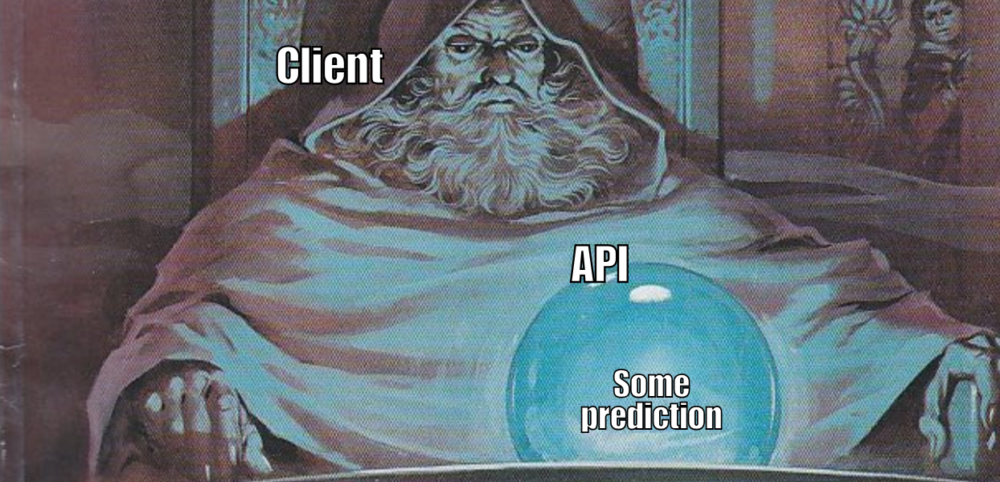
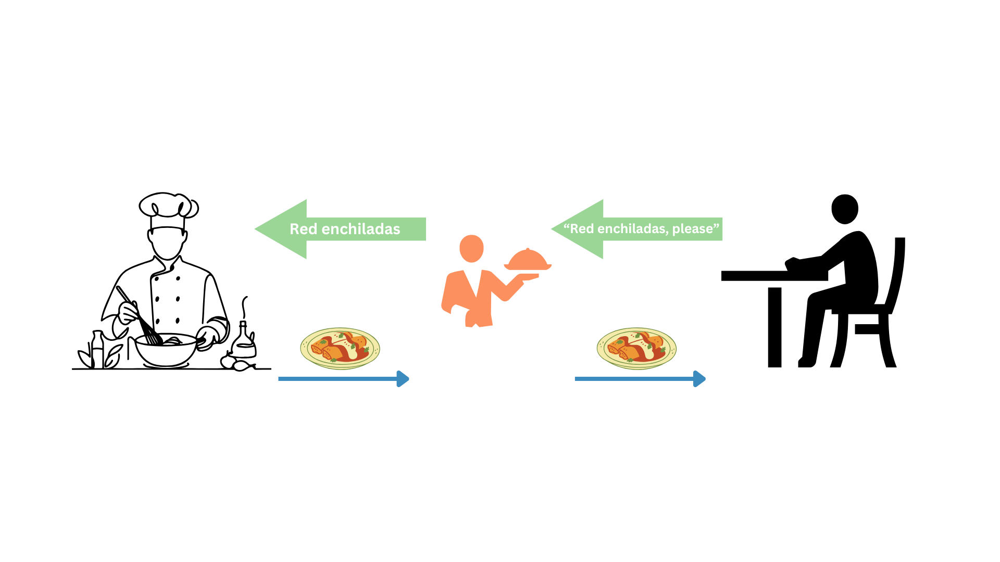
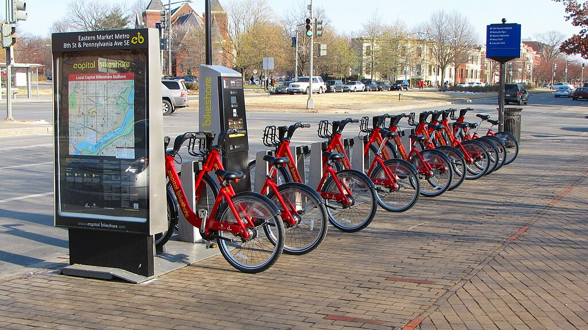
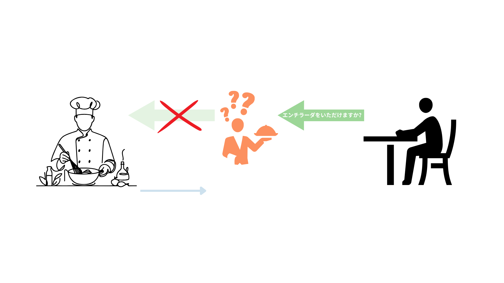

from catboost import CatBoostRegressor
# --snip--
# Instantiate our model
catboost_model = CatBoostRegressor(
iterations=1000, # Boosting iterations
learning_rate=0.1,
depth=6, # Tree depth
loss_function='RMSE', # Loss
verbose=100 # Let it print the learning state every 100 iterations
)
# Train
catboost_model.fit(X_train, y_train, cat_features=categorical_features)
# --snip--
# Save trained model
catboost_model.save_model("../predictive_models/catboost_model_19Dec2024.cbm")Bike Rentals Prediction API
GitHub Repo: Bike Rentals Prediction API

An accesible inference system
In a fast-paced world, one of the problems we face as data professionals is delivering our data products promptly. Also, distributing them in a manner that doesn’t affect our productivity, for example, manually running a Jupyter Notebook or an R script every time someone needs insights, is awfully unproductive.
An idea that is not new, is to deliver the “answers” in an automated, from which the clients can self-serve each time they are in need. After we have a data product, for instance, a predictive model (machine learning if you are into buzzwords), we can make available its capabilities to our stakeholders via a micro service.
An ML model as a microservice
Imagine your (predictive) model being accessed anytime without disturbing your peace or consuming your time; after all, your time is expensive, and you have many tasks. Here is where the idea of microservices comes into action. A microservice is an isolated piece of software that is in charge of a single task (service) and communicates through a well-defined API. You finish your model, pack it in a microservice, and make it available through an API.
This way, the model will always be available, and its consumption won’t block other tasks. Also, more products could be potentially developed with the API.
But what is an API?
An API is an intermediary that enables you to interact with a service without requiring knowledge of how this service works. You just need to know precisely what you want, tell it to the API, and the API will serve you what you requested.
Let’s say that after work, you get hungry, so you park your Capital Bikeshare™ bike out of your favorite Mexican restaurant1. You enter the restaurant and sit at a table. Instead of going directly to the kitchen to cook your own meal or asking the chef what you want, you need to place your order through the waiter or waitress. You kindly request your enchiladas, and after a while, they bring your meal to you.

Notice that you, as the client, are not required to know how to cook enchiladas. Also, you do not interact directly with the people who prepare the food. You get what you want through a waiter (the API).
In summary, an API is the piece of the system you interact with to get a result generated by a service. Producing this result might be complex, but you don’t care about that since you only have to deal with the API.
Software engineering for data scientists
Another problem common to data scientists is that research, predictive modeling, and analytics are dirty processes. This is partly due to a lack of training in software engineering, which involves design, testing, and software maintenance.
We usually have many problems to solve, questions to answer, and limited time at work. This leaves little to no time to apply the best practices to develop our analysis and maintain our code, leaving a trail of technical debt with each delivery. Yet, since most of us write code, we are, in fact, software developers because we develop software. This should be a hard-to-miss hint that software engineering practices must be core in our profession, or at least not ignored.
Here, we will implement some practices core of software engineering like:
- CI/CD: Continuous Integration (CI) and Continuous Deployment (CD) with GitHub Actions.
- Automated tests: unit, integration, and inference tests with
pytest. - Containerization: package the application with Docker for consistency across environments (i.e., it should work on every machine with a well-setup Docker). Dependency Management: For reproducibility, dependencies were specified in a
requirements.txtfile, and development was conducted in an isolated environment (venv). - Microservices architecture: The project is a self-contained microservice focused on a single responsibility: predicting bike rentals. It is independently deployable and communicates through HTTP.
We intend to review these concepts in a practical, applied way. This will give us more tools to design and produce more sustainable systems, which we can develop more efficiently through good practices without sacrificing smooth delivery to our clients.
About the technologies
Through this practical project, we will deal with several technologies, the most important:
- FastAPI: a framework to develop APIs with Python. It is easy to learn, and it makes the development of APIs incredibly fast.
- Uvicorn: an ASGI (Asynchronous Server Getaway Interface) Server. It handles incoming HTTP requests and sends responses. This lightweight server is appropriate for our microservice.
- Docker: a platform to pack our application into isolated “containers” and make them available to be run in several systems. Perfect to build microservices.
- GitHub Actions: a CI/CD platform that allows us to automate your development pipelines. We will use them here to automate the software tests and build and push our docker images.
- pytest: a Python framework to simplify our software testing.
These tools will make the development and publishing of our microservice a breeze.
Let’s get started
We will start with the mandatory xkcd comic that this kind of articles include so we can continue with the tutorial.

I know that this has nothing to do with software engineering or APIs, but little Bobby Tables always cracks me laugh. Now we can continue with the build of our API and some software engineering practices.
Problem we want to solve
Now, let’s focus on the problem we want to solve; this is probably the most crucial step since it is how we add value to the business. We are hired to solve analytical problems with evidence (data) as our raw material to produce those solutions.
You probably won’t be surprised to learn this project started as a Jupyter Notebook, which I encourage you to check out here. We are using an open data set from the UCI Machine Learning Repository.
Let’s assume we are working for Capital Bikeshare, a company dedicated to providing a self-service bike rental service managed through a mobile app. For the company, it is crucial to predict the peaks of service usage so they can restock or make more available their products when they’re more needed. These products can be cloud computing resources during peak hours, bicycle units, human staff, etc. Also it can b convenient to predict the dates and hours of least use for maintenance tasks, like server updates or bike maintenance.

Working as a data scientist for a big tech transport company, you will have lots of data and computational resources. On this occasion, you were put in charge of finding a way to predict the days and hours they will have to replenish their stock and increase the server’s capacity, investing in more resources only when necessary (saving money). Also, knowing when to schedule the maintenance labor will be valuable as well.
After finishing the data exploration, you know that working days and the entry and exit from work hours are the busiest time frames. Also, climatic conditions can affect the willingness to rent a bike. You are cautious, so you first took the time to understand the phenomenon. Then, you built the model prototype and corroborated that it is possible to forecast the number of rented bikes at an hour-of-the-day granularity level.
Success! You have a model that can help determine the best time to provide more resources or the times for maintenance. Does this mean that you have already finished with the task and can go on to live the good life?2 Well, you already know that Jupyter is not a tool that produces clean results and that if you leave it there, your model will have to be run manually each time, which can introduce bugs and errors. This also means that you will have a high and constant influx of people knocking at your door3 asking for predictions and insights.
Jupyter is ideal for experimenting and testing but not for delivering results. Hence, you have decided to deploy this first iteration of the model (the prototype) as a microservice that can be consumed via an API. Here, you can assess how the model behaves in the wild and prepare for future iterations. You will start adding value with predictions and valuable information that will help improve your model.
The engineering team, for example, will quickly adopt the app to know when to conduct maintenance jobs.
Microservice development
We were assigned a task, so we started by investigating bike rental data and then continued by building a predictive model using the CatBoost algorithm. This model will be the inference engine of our microservice. You can see this part of the project here in the notebook4. We saved the model in our project’s predictive_models/ folder.
Note
During this tutorial, we will show you some code snippets and indicate the file where the code is located5. You should then be able to follow the project’s code, which is available on the GitHub repo.
After some research and experimentation, we developed a CatBoost model capable of predicting the number of rented bikes at a specific time, given some environmental and temporal conditions. The code that generated the model is next.
Filename: notebooks/eda_and_toy_model.ipynb
In this analysis, we generated some insights6 and the core of our microservice, a predictive model stored in predictive_models/catboost_model_19Dec2024.cbm. Now that we have our predictor, let’s see how we can make the predictions accessible to others in the company.
API development
The API will move data around (receive and deliver) as its primary job, so it is key to establish a clear set of rules for the data our clients send. Moving back to our restaurant example, you probably could put your enchiladas order in English or Spanish, but it might be hard for the waiter if you place the order in Japanese7. Hence, to get your enchiladas, you must request them in a way that the staff can understand, and Pydantic is here to enforce the rules that make such understanding happen.

The Pydantic model
We will start this section by defining our Pydantic model. Pydantic is a library for data validation that uses Python-type annotations. Let’s establish a Pydantic model for our API requests and learn more about the library in the process.
Filename: app/models/bike_sharing.py
from pydantic import BaseModel, Field, field_validator
1class BikeSharingRequest(BaseModel):
2 season: str = Field(..., description="Season (Winter/Spring/Summer/Fall)")
mnth: str = Field(..., description="Month name (January, etc.)")
3 hr: int = Field(..., ge=0, le=23, description="Hour of the day")
holiday: str = Field(..., description="Yes/No if holiday")
weekday: str = Field(..., description="Name of the weekday (Monday/Tuesday/Wednesday/Thursday/Friday/Saturday/Sunday)")
4 workingday: str = Field(..., description="Yes/No if working day")
weathersit: int = Field(..., description="Weather code")
temp: float = Field(..., ge=0, le=1, description="Normalized temperature")
atemp: float = Field(..., ge=0, le=1, description="Normalized feeling temperature")
hum: float = Field(..., ge=0, le=1, description="Normalized humidity")
windspeed: float = Field(..., ge=0, le=1, description="Normalized wind speed")
5 @field_validator("season")
6 def validate_season(cls, v):
allowed = {"Winter", "Spring", "Summer", "Fall"}
7 if v not in allowed:
8 raise ValueError(f"season must be one of {allowed}")
return v
# -- snip -- (validators continue)- 1
-
The first thing to notice is that the Pydantic model is defined as a Python class that inherits from
BaseModel; this is the Pydantic base class used to create models with built-in data validation. - 2
-
Each class attribute is defined with a data type;
season, for example, is defined asstr. We also use the functionField()to specify constraints and metadata; the ellipsis literal...here means two things: first, a value must be provided, and second, there is no default value for this attribute. Then, some metadata is specified in thedescriptionparameter. - 3
-
For
hrattribute, we have constraints used for numeric validation. So,ge=0means that the hour has to be greater or equal to 0, whilele=23indicates that the hour should be less or equal to 23. So if the user send a request withhr=-1the system will complain and throw a warning. - 4
-
With what we know so far, we could read this line as “
workingdayis a requiredstrfield with a description.” - 5
-
We have the
field_validatordecorator8 to build custom validation logic for a specific field. Besides the already fantastic default capabilities of Pydantic, we can define our custom validations. In this case, we want to be sure that the client will provide only valid values for theseasonfield. CatBoost uses categories as predictors, and it is case sensitive (i.e.,"Summer" != "summer). With this extra step, FastAPI will send a custom message to the client, informing that the API expects"Summer"not"summer". - 6
-
We define the function
validate_season, which takes two parameters:cls, a keyword indicating a reference to the class (BikeSharingRequest), andv, representing the value of the field we’re validating. - 7
-
Check if the value we validate is within the
allowedset. - 8
- Raise an error if the value is not allowed; it also tells the client which values are expected.
To summarize the structure of our Pydantic model:
1from pydantic import BaseModel, Field, field_validator
2class BikeSharingRequest(BaseModel):
3 season: str = Field(..., description="Season (Winter/Spring/Summer/Fall)")
mnth: str = Field(..., description="Month name (January, etc.)")
hr: int = Field(..., ge=0, le=23, description="Hour of the day")
holiday: str = Field(..., description="Yes/No if holiday")
weekday: str = Field(..., description="Name of the weekday (Monday/Tuesday/Wednesday/Thursday/Friday/Saturday/Sunday)")
workingday: str = Field(..., description="Yes/No if working day")
weathersit: int = Field(..., description="Weather code")
temp: float = Field(..., ge=0, le=1, description="Normalized temperature")
atemp: float = Field(..., ge=0, le=1, description="Normalized feeling temperature")
hum: float = Field(..., ge=0, le=1, description="Normalized humidity")
windspeed: float = Field(..., ge=0, le=1, description="Normalized wind speed")
4 @field_validator("season")
def validate_season(cls, v):
allowed = {"Winter", "Spring", "Summer", "Fall"}
if v not in allowed:
raise ValueError(f"season must be one of {allowed}")
return v
# -- snip -- (validators continue)- 1
- Required Pydantic imports.
- 2
- The model is defined as a Python class.
- 3
- Within the class, we define the model’s fields as attributes of the class
- 4
- We can include custom validators within the model.
Great! Now, we have a Pydantic model and a better understanding of it. Next, we will work on our API.
FastAPI development
With the data model in place (the class BikeSharingRequest), we can continue developing our microservice served via an API.
Automated tests
Containarization
Inference
Microservice up and running
What we learned?
Whats left?
Model monitoring, automatic training incorporated to the CI/CD, model versioning, high level applications that consume the APIs
Recommended readings
Docker Deep Dive by Nigel Poulton Microservice APIs: Using Python, Flask, FastAPI, OpenAPI and more by Jose Haro Peralta
About the pondering guy in the header
It’s the wizard from “Pondering My Orb.” The art is the work by Angus Mcbride and was featured in a Lord of the Rings game book :) you can check Know Your Meme for more info/memes.
Footnotes
This must be how George R. R. Martin feels when foreshadowing a major (traumatic) event in his novels.↩︎
At the time of writing, I am aware that “no” is the answer since we’re still just at the introduction of this tutorial.↩︎
It’s even worse today, in our modern remote era. The dreaded Microsoft Teams ringtone will constantly haunt you.↩︎
You probably already noticed that we keep bringing up the link to this notebook. That’s because we spent so much time on it, and we was hoping you could look at our precious.↩︎
I learned this tip for technical writing from “The Rust Programming Language” book by Steve Klabnik, Carol Nichols, and the Rust Community. The book is a masterpiece and a highly recommended reading; you can find it here.↩︎
Whoops, here is the notebook again. When presenting results to my stakeholders as a habit, I always prepare two decks, one with very high-level results and a second highly technical one with all the math of the statistical/ML models and intricacies of the system design, just in case somebody has a question on the interesting technical part. This is expecting a deep, nerdy discussion about models, gaps, opportunities, and science; to date, the counts for the times I’ve used this second deck remain at 0. The good news is that it might be a proxy of our stakeholders’ trust in us.↩︎
エンチラーダをいただけますか？↩︎
A decorator is a function whose intention is to modify the behavior of other functions; it takes the original function and converts it into a different function. Luciano Ramalho does a great job explaining decorators in chapter 9 of his book “Fluent Python”.↩︎